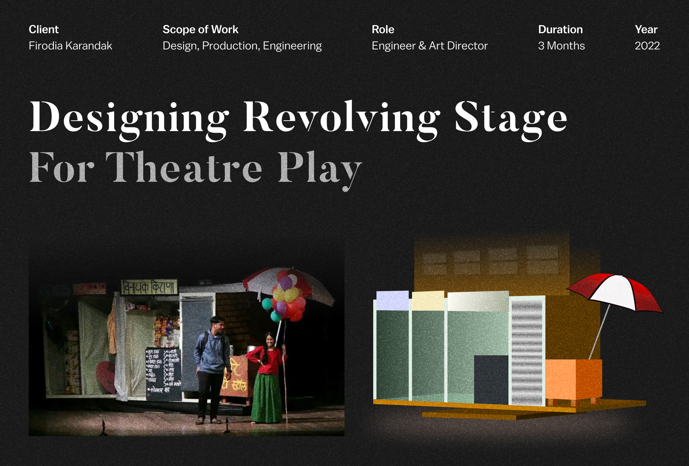

Theatrical device to move 15 ft. to 8 ft. to 16 ft. the stage for scene changes in Theatre Play.
Engineering
Mechanical Design
The stage assembly consists of four main components: the wooden revolving stage (15 ft. expansion), a central axle, a caster wheel bearing assembly arranged in a circular pattern, and an 8 ft. × 8 ft. wooden base. The entire structure is designed for disassembly and transport.
Engineering
Axle
Axle is a device used in theatrical play production to support and move various props and set pieces. It consists of a rod or spindle that is either fixed or rotating, passing through the centre of a wheel or group of wheels. The axle is designed to enable props and set pieces to be lifted, rotated and moved in any direction on stage. It is often used to swiftly and safely move large props and scenery pieces in a controlled manner during a performance.
The axle assembly is composed of the following components:
- Steel Plate 1 (1 ft. × 1 ft.)
- Shaft
- Thrust Bearing
- Ball Bearing
- Bearing
- Steel Plate 2
Engineering
Caster Wheel & Bearing Assembly
Wheels hold up the weight of the revolve. While it's desirable if a plain wagon moves quietly, it's even more important for our revolve, because one of this stage equipment unit is that it doesn't draw attention to itself by rumbling and squeaking. So we need wheels that will operate without making noise.
The caster wheels are arranged in a circular pattern on the 8 ft. base, with a 4 ft. radius, providing even weight distribution and smooth, silent rotation for the entire stage platform.
Engineering
Revolving Stage
For present purposes, a revolve is a circular disk, capable of supporting the same loads as the stage floor, lying in a horizontal plane and turning around a fixed center. You can conceive of a unit that violates any point of this definition; the victim's wheel in a knife-throwing act is not horizontal, a lightweight set piece can be revealed with a pie stand or a table mounted on a dowel rod, and so forth. I won't take up any of those cases.
The disk has to be fairly stiff, because we don't want set elements built on it to flex when the unit moves. We don't look for perfect rigidity; maybe we could build a 16- or 18-foot circle with no give in it, but even a sound floor sags a little when loaded, so there's no point incurring the vast expense of a perfect revolve to stand on an imperfect deck.
If the disk is more than a handspan across, it has to have support other than at the middle. A big revolve with all its weight concentrated at the center would punch right through the deck, making us no friends in the theater.
The forces on a revolve can be broken down (resolved) into vertical or gravity forces and lateral or thrust forces. Most of the thrusts act when we turn the unit, but lateral forces arise in violent action and even when someone steps on or off. If the revolve is stationary and no one is mounting or dismounting, gravity is the only force that acts on it. It will simplify design and construction if we can use one system to handle thrust and a different system to handle weight.
That won't quite happen, but we'll make the effort. In building theater equipment, most of us think in terms of wood and metal. There's a lot to be said for iron as a load-bearing material; your favorite freight elevator is chock-full of it.
Design
Final Stage Design
Cafe 1
Cafe 1 is an indoor high end cafe to give a feel of luxury and casual meetups. It was specifically used in Key Script play (2nd and 5th Scene) as the protagonist develop their story.
Revolving Stage
Revolving Stage was the centre piece of the act, as it performed as multiple stages inside one frame itself. The Building View, Corner Street View & Garden view were showcased using this stage dynamic.
Cafe 2
Cafe 2 was set as a foreground for Musicians to help give the inclusivity in the act.
Result
In – Action
The revolving stage in live performance — capturing scene transitions, actor interactions, and the dynamic set changes during the theatrical play at Firodia Karandak.
Team